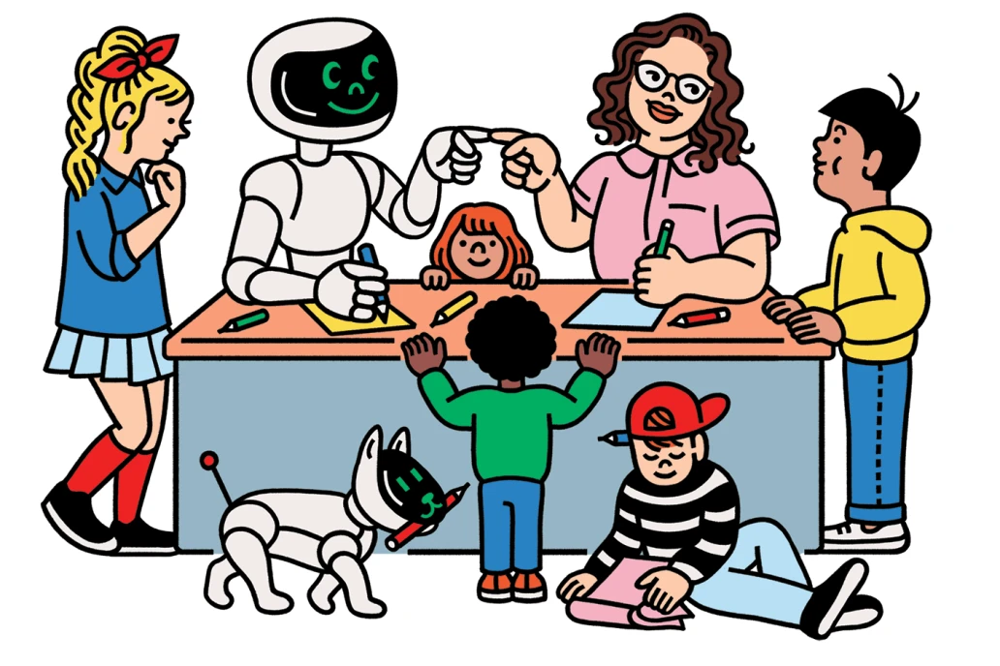
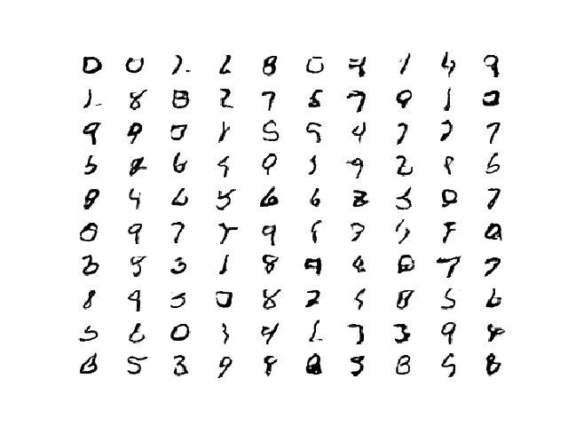
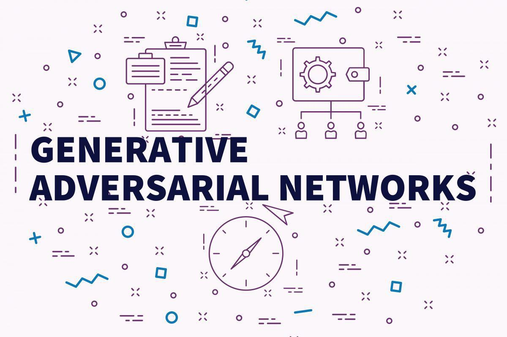
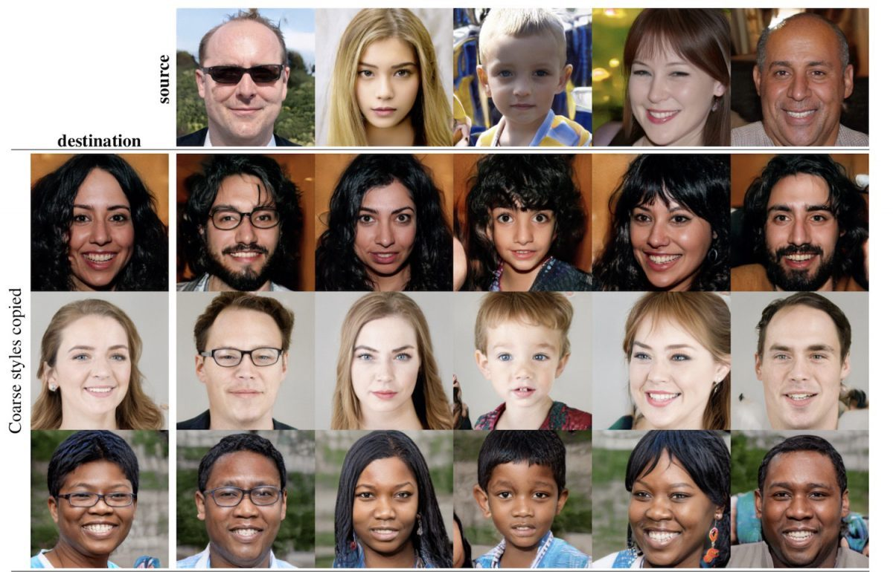
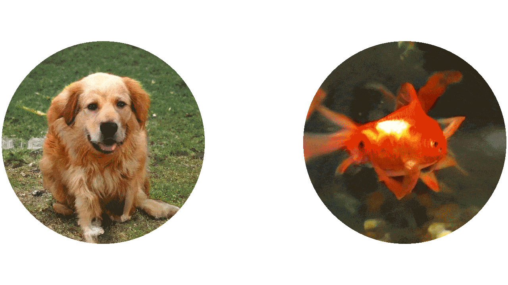
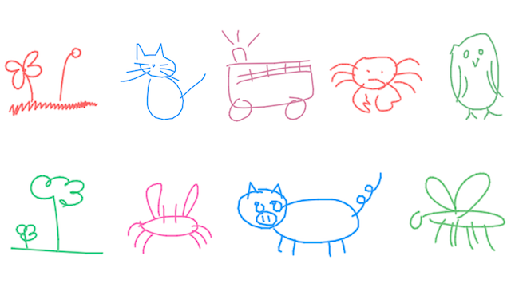
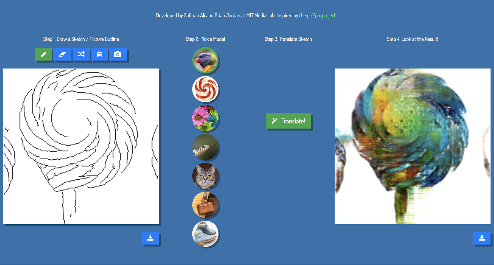
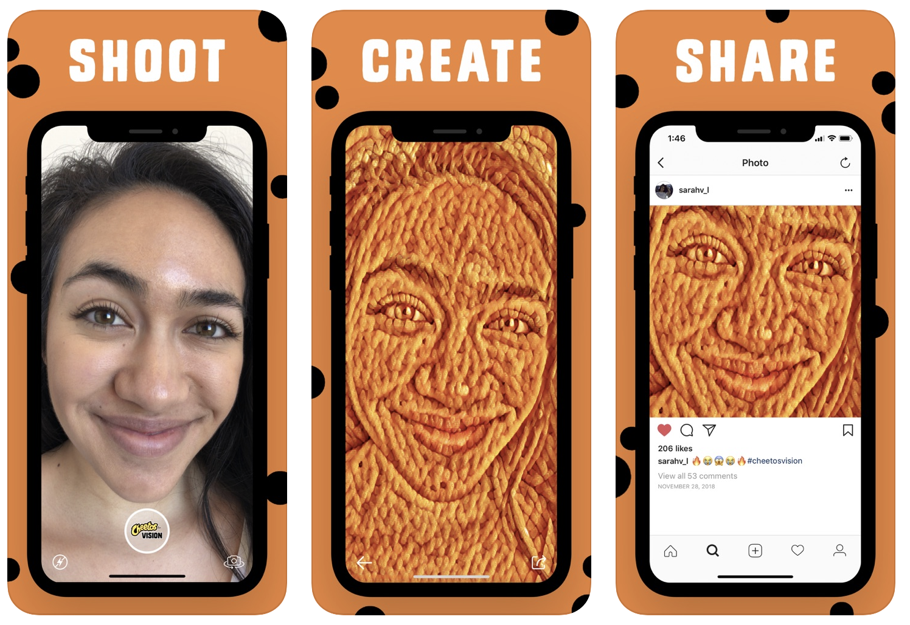
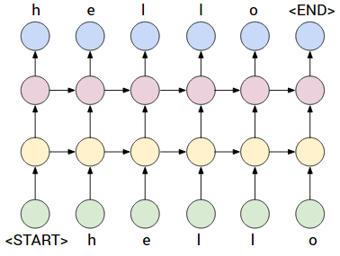
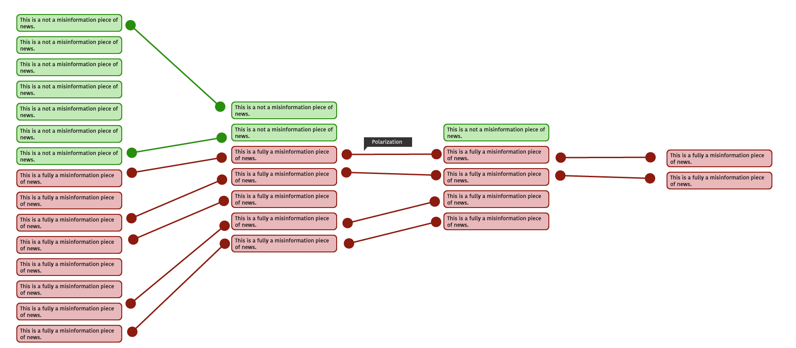

Module 2
In this module, students learn the basics of AI, identifying AI in their everyday environment, and get introduced to algorithmic bias.
What is AI? AI or Not
Students will learn the definition of Artificial Intelligence, what it constitutes and what it does not constitute. Students will learn to identify applications of AI in their environment.
Learning Goals:
- Students learn to define AI and discuss their understanding of AI.
- Students learn to recognize AI in their environment.
- Students learn different parts of an algorithm.
Teaching Guide: Here
Resources: Here
Online Teaching Guide: Here
Activity 2: Introduction to AI Ethics
Students learn about what an algorithm is and different parts of an algorithm through generating algorithms for a peanut butter and jelly sandwich, and then modifying it for various stakeholders and their goals. Students construct an ethical matrix for their PB&J sandwich and identify stakeholder goals.
Learning Goals:
- Three parts of AI: Dataset, learning algorithm, prediction.
- Identifying Stakeholders and generating an ethical matrix.
- Understanding bias.
Activity 3: Teachable Machines
Teachable Machine is a web-based tool that makes creating machine learning models fast, easy, and accessible to everyone. Students train a model in Teachable Machines to learn about datasets, labels and classes. They can have different outputs for each class they create. Students use a biased data-set to discuss bias in data.
Learning Goals:
- Hands-on experience building an image classification system
- Understanding and differentiating training versus test data sets
- Critical thinking about reasons for misclassification and how it ties to bias
Activity 4: AI Bingo
Students play a Bingo game with algorithm examples and work towards identifying the dataset that the algorithm uses and the prediction it makes. AI Bingo introduces students to applications of algorithms in their environment and allows a structure to discuss how these algorithms work.
Learning Goals:
- Identify datasets and predictions of common algorithms.
- Gain the ability to identify parts of an algorithm.

Teaching Guide: Here
Resources: Here
Online Teaching Resources: Here
Module 3
In this module, students learn about a new kind of AI that generates art. Students participate in an activity around classifying colors and generating new colors. We use this analogy to discuss classifying algorithms vs generative algorithms, and discuss generative AI techniques. We introduce GANs as one such generative technique. Students witness many instances of GAN generated art in the GANs or not activity. Now that students have learned what GANs can make, they are now set up to learn how GANs work in the next module.

Activity 1: Color Generation Activity
Students engage in color mixing activity. They experience the different outputs they get from mixing different input colors. Afterward, they engage in a color-mtching game where they try to match a randomly-generated color by mixing other colors.
Learning Goals:
- Develop a practical intuition for the differences between generation and classification
- Draw analogies between this activity and the processes behind real-life AI systems that do generation and/or classification
Teaching Guide: Here
Teaching Resources: Here
Activity 2: What are GANs?
Students define Generative Adversarial Networks and identify some applications of GANs.
Learning Goals:
- Explain classification and generation in the context of AI systems

Activity 3: GANs or not?
In this activity, the students are presented with GAN-generated images and asked to guess whether they are real or not.
Learning Goals:
- Demonstrate the power of AI in developing media(images) that resemble reality
- Challenge students to point out flaws that stand out in GAN-generated media
- Engage students in brainstorming their own applications of GANs

Teaching Guide: Here
Teaching Resources: Here
Module 5
In this module, students interact with various web tool to create art collaboratively with GANs. After each activity, students convene as a class to discuss:
- The art they generated
- Their impression of the GAN and how well it performed
- Their perception of AI as a creative collaborator
- What dataset the model is trained on
- The ownership of the generated art piece
Students submit their final generated art pieces that we form classroom collages or videos from.
Activity 1: Meet the GANimals
Meet the Ganimals is a collaborative social experiment, developed by researchers at MIT Media Lab, to discover new species, breed your own, and feed the ones you love. By rating data about your preferences for Ganimals, you can help them survive and guide their evolution. Students interact with the Ganimals web tools to breed their AI generated animals.
Learning Goals:
- Students understand how the generator and discriminator compete with one another to train a GAN.
- Students start developing a high-level notion of how GANs work

Activity 2: Sketch-RNN
Sketch-RNN, developed by Magenta, is a generative network that generates Doodles. This interactive web platform can be used for children to co-create doodles with AI. The model is trained on the QuickDraw dataset.
Learning Goals:
- Students get first-hand experience in co-creating doodles with GANs
- Students are then challenged to think of other places such partnerships between people and GANs could apply

Activity 3: GANPlay - Pix2Pix
GANPlay is an interactive web tool, developed by researchers at MIT Media Lab, where students can make their drawings and convert those to different styles, such as a cat style, or a shoe style. We discuss what datasets these models are trained on, and how the size of the dataset influences the model’s quality.
Learning Goals:
- Students get hands-on experience in augmenting their sketches with styles from different images
- Students are challenged to think about ownership rights of such creations where multiple parties can be directly or indirectly involved
- Students discuss the potential benefits and harms of GANs based off the activity they just engaged in

Activity 4: AI Duet
AI-Duet, developed by Magenta and Creative Lab teams at Google, is a collaborative Piano tool in which humans and AI can form piano duets.
Learning Goals:
- Students get hands-on experience in augmenting their music pieces with GANs
- Students are challenged to think about ownership rights of such creations where multiple parties can be directly or indirectly involved
- Students discuss the potential benefits and harms of GANs based off the activity they just engaged in
Activity 5: Cheetos portraits
Cheetos Vision is an A.I. camera that finds Cheetos snacks in everything it sees. Artificial Intelligence transforms your photos and videos into bizarre and awesome Cheetos Vision creations. In their extra time, students play with the Cheetos Vision app to make fun Cheetos templates.
Learning Goals:
- Students get hands-on experience in creatively collaborating with AI
- Students are challenged to think about ownership rights within this context of editing and sharing AI-modified content

Module 6
In this module, students generate new media using GANs. Students choose to do one of the two projects:
- Style Transfer of images using StyleGAN. We have a corpus of image datasets that students can choose from for the style.
- Generating new text using Char-RNN. Students can choose from Dr. Seuss text, knock-knock jokes, Shakespeare, or haikus, among other text-based datasets.
Activity 1: Image style transfer: StyleGAN
StyleGAN is a GAN tool that has popularly been used to generate fake human faces from real ones.
Activity 2: Text style transfer: Char-RNN
Char-RNN is an text-related AI that can be trained on particular writing styles. It can then be used to autocomplete prompts with a chosen style of writing it was trained on. Here, the students use a tool that can complete their prompts in the styles of Carl Sagan, Virginia Woolf, J.K.Rowling etc.

Module 7
Activity 1: DeepFake identification
Students use the Deepfakes tool to identify fake videos vs real ones, and point out what makes them fake. Students learn how realistic fake videos generated using Deepfakes are, and what some common ways of identifying them are.
Learning Goals:
- Students should be able to disambiguate different elements of an artwork and identify the meaning of “style” of an image
- Students witness a simulation of style transfer on paper without using the generative model jargon
- Students learn about the use of generative modeling techniques in AI for generating art.
Activity 2: How GANs can be used to generate fake news
Students engage in generating text using GPT-2 using the Talk to Transformer tool. We discuss how this can be used to generate very realistic sounding fake news in large amounts using an example of fake news generated by GPT-2.
Learning Goals:
- Students should be able to disambiguate different elements of an artwork and identify the meaning of “style” of an image
- Students witness a simulation of style transfer on paper without using the generative model jargon
- Students learn about the use of generative modeling techniques in AI for generating art.
Activity 3: How misinformation spreads
Students encounter several news articles, half of which have key features of misinformation and the other half does not. Students engage in a mock information spread activity where they make decisions about which news items they encounter should be published, and which ones should be discarded. We visualize which items were spread more. We discuss the six key features of misinformation and how it is shown to spread more than authentic information.

Learning Goals:
- Students should be able to disambiguate different elements of an artwork and identify the meaning of “style” of an image
- Students witness a simulation of style transfer on paper without using the generative model jargon
- Students learn about the use of generative modeling techniques in AI for generating art.
Activity 4: Environmental cost of training big AI models such as GANs
Learning about the computational and environmental cost associated with training AI models and how that, in turn, leads to inequity in access to developing AI.
Learning Goals:
- Students are made aware of the environmental impact that building and managing AI models can have
- Students are also challenged to think of ways this impact could be managed